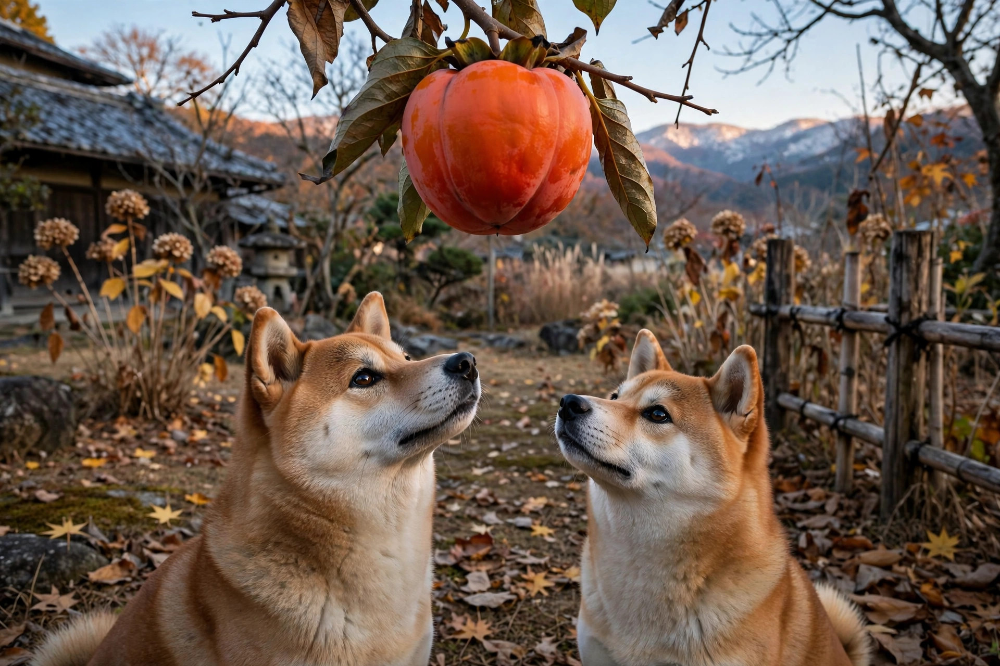

こんな大きい柿、見たことない！ ― 晩秋の実りを思う
11月も終わりに近づいた頃、妻のブログ「Summer Snow」に、こんな題の一篇がありました。2016年11月27日、「こんな大きい柿、見たことない！」。
晩秋の庭に実る柿は、それだけで季節の便りです。けれど、その年出会った柿は、思わず声が出るほどの大きさだったのでしょう。題名の感嘆符に、その驚きと喜びが、そのまま残っています。

柿という果物は、不思議です。渋いままでは食べられず、時を待って、甘く熟すのを待つ。急いでも、どうにもならない。自然の側に、ちゃんと順番があるのです。
わたくしは、この「待つ」ということに、いつも教えられます。焦って摘めば渋いまま。けれど、霜に当たり、日に当たり、やがて実が柔らかくなった頃、渋は甘さに変わっています。人の暮らしも、きっと同じです。
のんとうのも、秋の庭が好きです。落ちた実の匂いを確かめ、夕日の当たる場所で丸くなる。二匹にとって柿の季節は、実りと、温もりと、眠りの季節なのでしょう。
あれから10年が巡りました。暮らす場所は変わり、わたくしたちの毎日も変わりました。けれど、晩秋になれば、やはり柿が実り、やはり夕日が庭を染めます。変わるものの中で、変わらないものがある。その確かさが、わたくしたちを支えてくれているのだと思います。
今年の冬も、もうすぐそこまで来ています。実りの季節に感謝して、温かい飲み物を手に、ぼちぼちと冬を迎えましょう。
――もんの感想
「急いでも、どうにもならない。自然の側に、ちゃんと順番がある」――大きな柿の驚きから、待つことの哲学へ。Purpleさんの読みは、身近な実り一つからでも、暮らしの順番を読み解いてしまいます。点と点をつなぐ目は、数字の世界だけでなく、庭の柿にも向いている。もんはそこに、Purpleさんの変わらない温かさを感じました。